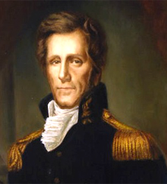
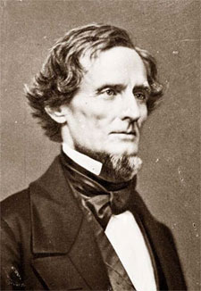

|
In 1540 the Spanish explorer Hernando De Soto led the first European expedition
into the wilderness of what would later comprise the state of Mississippi,
reaching the Mississippi River the following year and bequeathing his name to
the county which today lies just south of Memphis. But it was not until 1699
that a Frenchman, Pierre Le Moyne, Sieur d'Iberville, constructed Fort Maurepas
on Biloxi Bay, thus establishing the first permanent European settlement in the
lower Mississippi Valley. During the following century three European
powers--France, England, and Spain--competed for supremacy in the area.
Under the leadership of Iberville's younger brother, Bienville, the French
moved rapidly to consolidate their position. During the first two decades of the
eighteenth century they founded settlements at Mobile and New Orleans and, in
1716, erected Fort Rosalie on the bluffs of the Mississippi River at Natchez.
Three years later, the first significant number of slaves entered French
Louisiana--a number which increased to nearly 6,000 by the end of the French
period. Few of these slaves, however, were situated east of the Mississippi
River within the boundaries of present-day Mississippi. As the French ventured
further into the interior, they encountered the three great Indian tribes--the
Choctaw, Chickasaw, and Natchez--that inhabited Mississippi before the
Europeans' intrusion. Most powerful were the Choctaws, numbering some 20,000,
who controlled the central portion of Mississippi until well into the nineteenth
century. The Chickasaws and Natchez, each numbering about 4,500, occupied the
northern and southwestern areas respectively. Least congenial were the Natchez
who massacred the garrison at Fort Rosalie in 1729, thereby precipitating
retaliatory action by the French that resulted in the virtual extermination of
the Natchez Nation two years later. However, intermittent campaigns against the
Chickasaws, who had incurred French wrath by establishing close commercial ties
with the English, ended in failure. As a consequence of inveterate misrule,
emphasis upon commerce rather than settlement, and chronic warfare with the
Indians, Mississippi was still sparsely populated when it passed under English
control in 1763 at the conclusion of the French and Indian War.
The British period was marked by relative tranquility in Indian-white
relations and by vigorous efforts to promote settlement of the Natchez area,
particularly after 1770. Following the outbreak of the American Revolution,
Natchez received an influx of Loyalist refugees from the Atlantic colonies, thus
reinforcing its rapidly developing Anglo-American, Protestant character.
Somewhat surprisingly, this ethnocultural orientation did not change when Spain,
following France's lead, entered the war against Great Britain and occupied
Natchez in September 1779. Despite a counterclaim by the United States after
1783, Spain retained control of the Natchez District until 1798. Under the
loose, benevolent rule of the Spanish, the colony prospered. Spanish authorities
confirmed land grants made during the British period and stimulated economic
growth by encouraging tobacco and indigo production. When the indigo boom
faltered in 1795, the fortuitous introduction of the cotton gin brought the
promise of enduring prosperity to the region. Thus, by the end of the Spanish
period, a population which in 1784 numbered but 1,619, of whom 498 were slaves,
had increased more than fourfold to 4,500 whites and 2,400 blacks.
The Mississippi Territory, as created by Congress in 1798, included those
lands extending from the thirty-first parallel northward to Tennessee and
bounded by the Mississippi and Chattahoochee rivers. During the War of 1812 the
area south of the thirty-first parallel between the Pearl and Perdido rivers,
previously a part of Spanish West Florida, was annexed to the territory.
Initially, settlement was confined almost exclusively to the Natchez District
along the lower Mississippi and to a small colony on the Tombigbee River in what
is now Alabama. However, the eastern area experienced modest growth during the
first decade and a half of the territorial period. Then, following Andrew
Jackson's decisive victory over the Creeks in 1814, twenty million acres in the
eastern part of the territory were opened to white settlement.
|

Andrew Jackson
|
Apprehensive lest they lose political control to the horde of white farmers
who poured into the eastern settlements after the war, the conservative planters
of the Natchez region campaigned successfully for a partition of the burgeoning
territory. On March 1, 1817, President James Madison signed the enabling act
which provided for admission of the western half to statehood and reorganization
of the eastern portion as the Alabama Territory. Mississippi, with a population
already more than 40 percent slave, entered the Union as the twentieth state on
December 10, 1817.
The first two decades of statehood were years of unparalleled growth and
prosperity for Mississippi. It was during this period that cotton assumed its
dominant position in the state's economy. Facilitated by uniformly favorable
prices, the introduction of improved varieties from Mexico, and the cession of
Indian lands in the northern two-thirds of the state, cotton culture spread
rapidly across Mississippi. As the state's forests gave way to cotton fields, a
heavy tide of Afro-Americans poured in from the older slave states to till the
newly cleared lands and harvest the white gold. The cotton-slavery boom reached
a climax in the 1830s, when cotton output quadrupled and the slave population
increased by nearly 200 percent to constitute, for the first time, a majority of
the state's total population. Thus, by the end of the decade, Mississippi had
established itself as the leading cotton-producing state in the nation and,
along with South Carolina, as one of only two black majority states in the
South. Both distinctions were to have profound implications for the future.
When Mississippi became a state, white settlement was concentrated in three
areas: the Natchez District, extending from the mouth of the Yazoo River
southward along the Mississippi to the Louisiana line and comprising 60 percent
of the total population and 75 percent of the slaves; the infertile piney woods
region in the southeast, where whites outnumbered blacks by four to one; and a
small, isolated enclave east of the Tombigbee River on the Alabama border. In
1820 the Choctaws, who had previously surrendered title to the piney woods area,
ceded a substantial bloc of territory in west-central Mississippi. This New
Purchase area, as it was called, developed rapidly during the 1820s, soon
rivaling the Natchez District in population and political influence. Finally,
the huge Choctaw and Chickasaw cessions of 1830 and 1832, respectively,
extinguished Indian title to the remaining land in Mississippi and inaugurated
the "flush times" of that decade. As land-hungry immigrants from the older
states surged in to settle the vacated Indian lands, thirty new counties--half
of the antebellum total--were organized in just two years, 1833 and 1836.
This influx of new settlers brought far-reaching political as well as
economic changes to Mississippi. Predominantly small farmers who owned few if
any slaves, the newcomers exhibited more democratic propensities than did the
planter aristocrats of the Natchez region. Their hero was Andrew Jackson,
chastiser of Indians and champion of the common man. They began to flex their
political muscles as early as 1822 when they forced a removal of the capital
from Natchez to a new site in central Mississippi, appropriately named Jackson.
A decade later, they secured a new and much more democratic state constitution
which provided, among other features, for universal manhood suffrage and popular
election of all judges. In the 1830s party divisions, based largely on a
conjunction of economic interests and intrastate sectionalism, began to emerge.
The plantation areas--the old Natchez District augmented by the newer Yazoo and
upper Pearl River regions--became Whig strongholds, while Democratic strength
was greatest in the former Choctaw and Chickasaw lands of east-central and north
Mississippi. Capitalizing on both the personal popularity of Jackson and the
population base engendered by settlement of the Indian cession lands, the
Democrats gradually established their ascendancy in Mississippi politics.
Although the Whig presidential candidate, William Henry Harrison, carried the
state in 1840 and Whig principles persisted in the river counties until the time
of disunion, the party of Jackson was clearly the dominant political faction in
Mississippi throughout the late antebellum period.
The topography of Mississippi profoundly affected agricultural and
demographic patterns as well as political alignments. Although ten distinct soil
regions are discernible within the state, they may be consolidated into four
major ones. The most fertile of these areas, and thus the most propitious for
the development of slave plantations, was the Delta-Loess region which
encompasses the western part of the state from just below Memphis to the
Louisiana line and includes two subregions: a flat, elliptical expanse of
alluvial soil between the Mississippi and Yazoo rivers north of Vicksburg and a
narrow strip of brown loam soil, perhaps thirty miles wide, bordering the Delta
on the east and proceeding thence along the Mississippi River to the
southwestern tip of the state. It was the southern part of the Delta-Loess, the
Natchez District, which was the first to be settled. However, an inadequate
levee system precluded development of the northern portion, or Yazoo Delta,
until after 1840, and it was not until the postbellum period that the Delta
became the heart of Mississippi's Cotton Kingdom. Fertile soil also
characterized two extensions of the Alabama Black Belt into Mississippi--the
Northeast Prairie, a strip varying from ten to twenty-five miles in width, which
extends southward from Corinth through Lowndes and Noxubee counties to the
Alabama line; and the Central Prairie, a slightly wider belt of black calcareous
earth, which runs from Madison County in a southeasterly direction to the
Alabama border. The other two soil regions, which may be defined broadly as the
red clay hill country of east-central and northeast Mississippi and the
long-leaf pine barrens of the southeast, were too poor to support slave
plantations. Consequently, most inhabitants of these areas were small
slaveholders and yeomen farmers who practiced subsistence agriculture,
supplemented in the piney woods with open-range cattle grazing.
The salubrious soils of western Mississippi and the black prairie belts
provided the basis for a dramatic expansion of cotton culture during the 1830s.
The spread of cotton was also promoted by the appearance of a new variety,
christened Petit Gulf, which was developed by Dr. Rush Nutt and other planters
in the Natchez Vicksburg area. Superior to its predecessors in yield, quality of
fiber, resistance to disease, adaptability to various soils, and ease of
picking, this hybrid was first marketed in 1833 and soon spread to other
cotton-producing states, where it became the ancestor of all later American
breeds. Under these and other favorable circumstances, including easy credit
from state banks and a sustained demand for cotton on the world market,
Mississippi agriculturists cleared thousands of acres of fertile land and
concentrated their resources almost exclusively on cotton production. The
results were impressive. More than a million acres were planted in cotton in
1836, when the price reached 20¢ per pound in the New Orleans market, and cotton
production mushroomed from 100,000 bales in 1830 to 386,803 by the end of the
decade.
This impressive growth was arrested sharply by the Panic of 1837, which
produced acute distress throughout the state, especially after 1840. As cotton
prices plummeted to an all-time low of 5¢ per pound in the mid-1840s,
Mississippi planters began to heed the pleas of reformers such as Martin W.
Philips, who stressed crop diversification, selective breeding of livestock, and
more intensive methods of husbandry in order to promote self-sufficiency and
increase per-acre yields. Propagated through agricultural societies, fairs, and
journals, such practices enabled the state to attain a degree of diversity and
self-sufficiency which would not be approached again for nearly a century.
Nevertheless, rising cotton prices in the last decade of the antebellum period
induced a return to the emphasis upon cotton. In 1859 Yazoo County led the state
in the production of that fleecy white staple with 64,075 bales of ginned
cotton, a figure exceeded by only two other counties in the United States. With
the rich alluvial lands of the Yazoo Delta yielding as much as 3,000 pounds of
seed cotton per acre, compared to the South-wide average of 530 pounds,
Mississippi cotton growers enjoyed a decided competitive cost advantage by the
time of the Civil War.
The spectacular expansion of Mississippi's agricultural economy during the
antebellum years was based on the exploitation of slave labor. As the
profitability of cotton increased, so too did the importation of slaves.
Following a rise of approximately 100 percent in both the second and third
decades of the century, the state's slave population soared to nearly 200,000
during the boom period of the 1830s; then, in the wake of the agricultural
depression, the rate of increase slowed appreciably in the final two decades of
the antebellum period. Only in the depression-ridden 1840s did Mississippi's
white population increase more rapidly than its blacks. Consequently, by 1860
slaves constituted 55.2 percent of the total population--a figure exceeded only
by South Carolina among all the slave states.
Blacks became most heavily concentrated in those areas best suited to
large-scale cotton production--the Natchez region initially, and, after 1840,
west-central Mississippi and the Yazoo Delta. In the last two decades of the
antebellum period slaves constituted approximately 75 percent of the population
in the five leading cotton-producing counties but only 20-40 percent of the
population in the nonplantation areas. The proportion of slaves was highest in
the Delta counties of Issaquena and Washington, where, in both 1850 and 1860,
blacks outnumbered whites by more than nine to one. By contrast, slaves
constituted only 12 percent of the population in the piney woods county of
Jones, where disaffection toward the slaveholders and the Confederacy became so
intense during the Civil War that stories of the legendary "Free State of Jones"
persist to this day.
Much of the huge increase in Mississippi's slave population can be attributed
to importations from the older slave states, particularly those of the upper
South. More than 200,000 blacks were imported into the state by immigrant
masters and professional traders during the period 1830-1860. Most slaves made
the journey to Mississippi on foot, departing the upper South in the fall and
traveling in slave coffles at the rate of about twenty-five miles per day.
Franklin and Armfield, the largest domestic slave-trading firm in the nation,
operated a major selling depot at Natchez, and there were smaller slave markets
in Vicksburg, Woodville, Aberdeen, and Crystal Springs. Periodic legal and
constitutional efforts to limit or prohibit the importation of blacks for sale
proved abortive in the face of a mounting demand for slaves after the opening of
the Indian cession lands.
The presence of a large slave population in Mississippi obviously
necessitated strong measures of control by public authorities. As in other
Southern states, slaves were subject to special legal codes which severely
restricted their freedom of movement and imposed upon them unique occupational,
educational, and commercial limitations. Slaves were also liable to prosecution
under the general criminal laws of the state, although trial procedures differed
from those established for whites. Thus, slaves charged with minor offenses were
tried before an informal court consisting of a justice of the peace assisted by
two or more slaveholders. Those convicted of misdemeanors received corporal
punishment ranging from ten to thirty-nine lashes. Under both antebellum state
constitutions slaves accused of felonies were accorded jury trials. The jury was
drawn from a panel of twenty-four men, half of whom were required to be
slaveholders. Those adjudged guilty of noncapital felonies were usually punished
by burning in the hand, executed by the sheriff in open court. Some twenty
offenses--including malicious assault with intent to kill, manslaughter of
whites, rape, arson, insurrection, and conspiracy--were deemed capital crimes
when committed by slaves. The patrol system was also an important agency in
controlling the slave population of Mississippi. Originally tied to the militia,
the patrol apparatus was placed under the jurisdiction of local units of civil
government in the 1830s. Charged primarily with the tasks of apprehending blacks
found at large after curfew and of dispersing unlawful assemblies of blacks,
slave patrols, which generally consisted of four men in each patrol, were
effective instruments of control over the large black population in some parts
of the state. The vast majority of slave transgressions, however, were
relatively minor infractions of plantation discipline which were handled
privately by masters and overseers without state intervention.

Five generations of a Mississippi slave family
|
Despite the array of public and private restrictions imposed upon
Mississippi's slave population, blacks did not submit willingly or passively to
the system which oppressed them. As recent scholarship has demonstrated, slaves
could and did play a major role in defining the complex set of rules and
relationships which governed the slave society of the Old South. If they could
not challenge successfully the condition of enslavement itself, they at least
could ameliorate the quality of life within slavery. Thus, in the constant
struggle to preserve their self-esteem and to resist personal degradation,
slaves found solace in such African cultural survivals as music, dancing,
folktales, and conjurism. They took the religion forced upon them by their
masters and shaped it to meet their own emotional needs. On the more practical
level, slaves exploited the natural antipathies between planter and overseer and
between overseer and driver to win important concessions on work requirements
and disciplinary parameters.
Mississippi planters constantly complained of the slow pace set by their
field hands, but, as with the chronic problem of runaways, they accepted these
"leisurely" work habits with relative equanimity, attributing them to the racial
peculiarities of blacks. Nor did masters object too strenuously when slaves
converted such benefits as garden plots, holidays, and nuptial and burial
ceremonies from privileges into rights. If slaveholders proved obdurate, their
black charges resorted to subtle means of resistance--breaking implements,
feigning sickness, mishandling livestock--to effect desired changes.
Only rarely did the pent-up frustrations of Mississippi's black majority
flare into open violence, though whites were acutely aware of that potential.
White fears were manifested most vividly during the summer of 1835 when
sensational revelations concerning an alleged slave conspiracy purportedly
engineered by the notorious outlaw, John A. Murrell, resulted in the execution
or summary killing of more than a score of supposed conspirators in the
west-central portion of the state. Thus, by relying upon a variety of cultural
mechanisms and striking a delicate balance between accommodation and resistance,
Mississippi blacks protected themselves from the most dehumanizing features of
slavery.
In the absence of specialized studies on the subject, one can only speculate
on the degree to which slave life and culture in Mississippi were distinctive.
Certainly, the long presence of a large Indian population added an ethnographic
dimension not found in most other slave states. Introduced into Choctaw and
Chickasaw villages as early as the 1750s, slaves acted as interpreters between
whites and Indians and played a vital role in tribal acculturation. During the
territorial and early statehood periods there was considerable social and
commercial intercourse between blacks and Indians, leading inevitably to
miscegenation. As mixed-blood families and tribal leaders themselves became
slave owners,. slaves in adjacent areas sought refuge in Indian territory and
exploited in other ways the confusion resulting from the movement of blacks
between white and Indian jurisdictions. Gradually, however, by means of
legislation and military patrols, white authorities moved to discourage
communication between the two subordinate racial groups. Consequently, by the
1820s, such measures, together with the accelerated pace of Indian removal and a
substantial increase in slave ownership by the remaining Indians, had combined
to produce a greater separation between blacks and Indians. Indicative perhaps
of the new order is the fact that Greenwood LeFlore, chief of the Choctaw
Nation, was one of the largest planters in the state on the eve of the Civil
War.
Other factors influenced the characteristics of Mississippi's slave
population. It is likely that the migratory origins of that population had a
deleterious effect upon the integrity of the slave family in Mississippi,
although a distinction should be made between those who emigrated with their
masters and those introduced into the state by professional traders. The former
probably replicated familial and demographic patterns prevalent in the older
slave states, whereas the latter included a preponderance of young male slaves,
many of whom had been separated by sale from their families. The substantial
number of absentee estates, particularly in the heavily black Yazoo Delta,
facilitated greater cultural autonomy and promoted a sense of group solidarity
among blacks in that environment. Because of the large pool of potential
marriage partners on large Mississippi plantations, the practice of taking
"broad wives"--mates owned by neighboring slaveholders--was less common than in
such predominantly farm states as Virginia, North Carolina, and Tennessee.
Finally, the paucity of urban sites reduced social contacts between whites and
blacks with the result that Mississippi had a relatively small proportion of
mulattoes in its slave population.
It is doubtful that living conditions of plantation slaves in Mississippi
differed significantly from those in other states. Perhaps the best that can be
said is that they were tolerable. The standard food ration was three and
one-half to four pounds of pork and a peck of corn meal per week, supplemented
on many plantations by poultry and garden produce. Slave housing was rustic but
adequate. Typical were the accommodations on Martin W. Philips's Log Hall
plantation, where each family was quartered in a sixteen-by-eighteen-foot frame
dwelling with a brick chimney. These houses were furnished with bedsteads and
bedding, crude chairs, and chests or trunks in which clothing could be stored.
It was customary to dispense clothing twice annually, usually in May and
November. Each hand received two summer outfits and a straw hat, two winter
outfits and a wool hat, and two pairs of shoes. Blankets were distributed less
frequently, perhaps every other year to each family. For both humanitarian and
economic reasons, owners evinced genuine concern for the physical well-being of
their slaves. Minor ailments were usually treated by the master or overseer, but
trained physicians were called in to diagnose more serious cases of slave
illness. There was less unanimity among planters in making provision for the
spiritual welfare of their black charges. Some discouraged any kind of religious
observance, others refused to permit their slaves to worship off the plantation,
but most allowed blacks some form of Christian worship. Integrated services were
the norm in regular churches, although blacks were seated in special galleries
and subjected to sermons pitched toward the white communicants. In terms of
church membership, blacks constituted more than a third of Mississippi's 41,500
Baptists and one-sixth of the 66,000 Methodists in the state in 1860. Despite
their long hours of labor--as many as sixteen hours a day during the
summer--slaves were accorded a generous allotment of holidays. Except in the
most unusual circumstances, Sundays were days of rest, and most planters gave
occasional whole or half holidays on Saturdays. In addition to customary
holidays like Christmas, when three to seven days were normally given, and the
Fourth of July, blacks also received a respite from labor on such special
occasions as the end of cotton harvest or the day of a slave wedding. In the
final analysis, the general treatment of slaves in Mississippi, as elsewhere,
depended largely on the character of the individual master. And that, of course,
was the greatest iniquity of slavery--placing the life of one human being
completely at the mercy of another.
From the beginning of statehood lawmakers sought to minimize the number of
free blacks in Mississippi. Private emancipation was permitted only with the
consent of the legislature and for some meritorious service to the master or to
the state. Even these limited grounds for manumission were abrogated by the
Revised Code of 1857, which prohibited private emancipation under any
circumstances. In the 1830s, doubtless because of changing attitudes toward
slavery, attempts were made to eradicate altogether the free black element in
Mississippi, which numbered little more than 500 at the beginning of that
decade. Thus, an 1831 statute compelled all free blacks between the ages of
sixteen and fifty to leave the state unless they could furnish proof of "good
character and honest deportment" to their county probate court.
Simultaneously with this action by the state, the Mississippi Colonization
Society was organized in Natchez to promote the same goal. Supported by some of
the wealthiest planters in the state, this society labored assiduously during
the 1830s to resettle freed blacks in the African colony of Liberia, but in the
end its efforts proved as ineffectual as those of its parent organization on the
national level. Although the Mississippi Colonization Society received nearly
$100,000 in contributions, it managed to send to Liberia only 571 blacks--most
of them ex-slaves freed for the specific purpose of being colonized--before
becoming virtually defunct by 1840.
Despite its early demise, the free black element in Mississippi remained one
of the smallest in any Southern state, numbering only 1,775 in 1860. One of
Mississippi's free blacks, the celebrated barber of Natchez, William Tiler
Johnson, acquired considerable property and social standing before falling
victim in 1851 to the system of white domination. His murder at the hand of a
white neighbor went unpunished because the only witness, a slave boy, was
prohibited by state law from testifying against a white person.
In Mississippi, as in other slave states, there was a pronounced change in
public attitudes toward slavery during the 1830s. Prior to that time most
Mississippians had been apologetic about the institution, viewing it as a
necessary evil. By 1835, however, largely as a consequence of the increasing
profitability of cotton and popular revulsion against the radical abolition
crusade, politicians and writers began to defend slavery as a positive good and
to extol its virtues for both blacks and whites. One of those who made a
significant contribution to the proslavery literature of the period was Henry
Hughes, a lawyer from Port Gibson. Credited with being the first American writer
to use the word sociology in the title of a book, Hughes presented a novel
defense of slavery in an 1854 work, entitled A Treatise on Sociology.
According to Hughes, slavery had evolved over time into something which he
termed warranteeism, a near-utopian condition in which the master merely
exercised a trusteeship over the slave, owning his labor but not his body. Also
a warm advocate of reopening the African slave trade, Hughes was more extreme
than most of his contemporaries. By the 1850s most white Mississippians had
become convinced of the inherent rectitude of the slave system and were
determined to preserve it at any cost.
Slave labor was employed most efficiently and profitably on the plantation,
which may be defined as an agricultural unit containing at least 200 acres of
improved land and a minimum of twenty slaves. Using this definition, about 20
percent of the agricultural operators in Mississippi on the eve of the Civil War
could be classified as planters, thus making Mississippi one of the major
plantation states in the South. In the Delta-Loess section of west Mississippi
nearly half of the heads of agricultural families were planters. Moreover,
Mississippi had a greater number of large planters--those owning 100 or more
slaves--than any other cotton state except Alabama. In 1850 some 216 Mississippi
proprietors were listed in that category--a number which rose to 316 by the end
of the decade. Similarly, reflecting a general trend toward consolidation of
slaveholdings during the 1850s, the number of owners holding 300 or more slaves
in the state increased nearly threefold during the same decade, particularly in
the Natchez area.
These Natchez nabobs constituted the aristocracy of Mississippi slaveholders.
Heterogeneous in background and cosmopolitan in outlook, they were far from
typical representatives of their class, either in Mississippi or elsewhere in
the South. Some, like William J. Minor and brothers Alfred Vidal and Samuel
Manuel Davis, were descended from former Spanish governors; others, like Henry
Chotard and the Surgets, were of French ancestry; still others, most notably
Stephen Duncan, David Hunt, John Carmichael Jenkins, and William Newton Mercer,
were natives of Northern or border states. Most entered the area during the
Spanish or territorial periods and, through fortunate marriage alliances and
shrewd capitalistic entrepreneurship, accumulated great wealth. Two of them,
Stephen Duncan and Levin R. Marshall, amassed multistate slaveholdings in excess
of 1,000 each, placing them among the half-dozen largest slaveholders in the
entire South. The palatial homes of the Natchez planters stand today as
monuments to the opulent society which they created in the mid-nineteenth
century--an opulence which enabled Adams County to lead the nation in per capita
wealth on the eve of the Civil War.
|

Mississippi slave owner and Confederate
president Jefferson Davis
|
Ironically, the Natchez nabobs, those with the greatest vested interest in
the peculiar institution, manifested the least inclination to sever the ties of
union when secession fever struck Mississippi in the wake of the Mexican War.
There were, of course, exceptions. Governor John A. Quitman, a hero of that war
and a political maverick among the traditionally conservative Natchez
planter-aristocrats, brought the state to the brink of secession in 1851 before
cooler heads prevailed. Thereafter, the only significant political question in
Mississippi was whether slavery, the very cornerstone of the state's
socioeconomic system, could best be preserved by remaining in the Union or
separating from it. Prodded by rural editors, provincial lawyer-politicians, and
petty slaveholders, the state gradually but inexorably moved toward the latter
option. The Mississippi convention, by a vote of 84-15, with token opposition
primarily from delegates representing the river counties and the northeast hill
country, adopted an ordinance of secession on January 9, 1861. Only South
Carolina, the other black majority state, had acted with greater celerity.
During the ensuing Civil War, Mississippi contributed to the Confederacy not
only its president, Jefferson Davis, but also nearly 80,000 soldiers. More than
a third of the latter paid with their lives--a death toll exceeded only by North
Carolina among the Confederate states. The plantation-slave system, which
secessionist leaders had sought desperately to preserve, disintegrated before
their eyes as the Union launched its onslaught against Vicksburg during the
early months of 1863. By war's end the state had suffered incalculable human and
material losses. Once a wealthy state, Mississippi has never recovered from the
economic consequences of the war and emancipation. At the close of hostilities,
with freedmen classified as population rather than property, Mississippi dropped
from fifth among thirty-three states in per capita wealth to last--a distinction
which the state has yet to relinquish. Saddled with a one-crop agricultural
economy until well into this century and plagued for more than a century by
racial problems, perhaps no state has been more profoundly affected by the
legacies of the antebellum era than Mississippi.
Source: Randall M. Miller and John David Smith, eds. Dictionary of
Afro-American Slavery (Westport, CT: Praeger, 1997), 481-95.
|